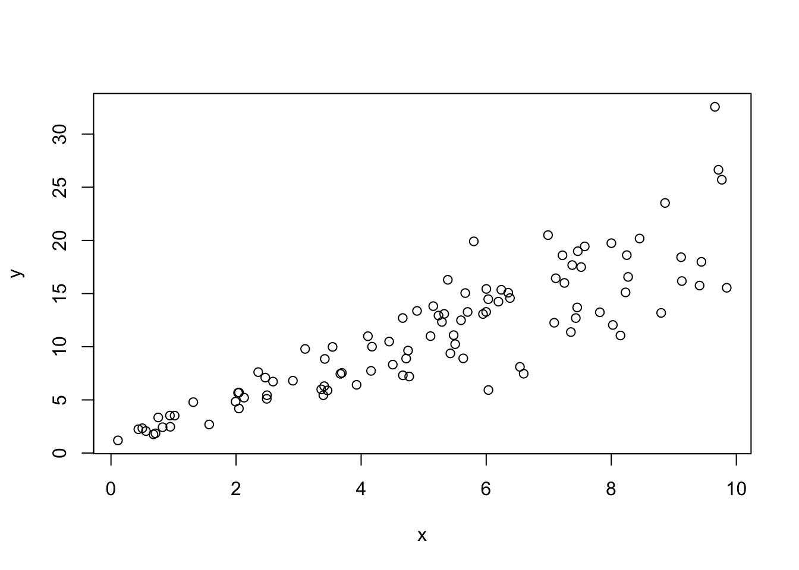
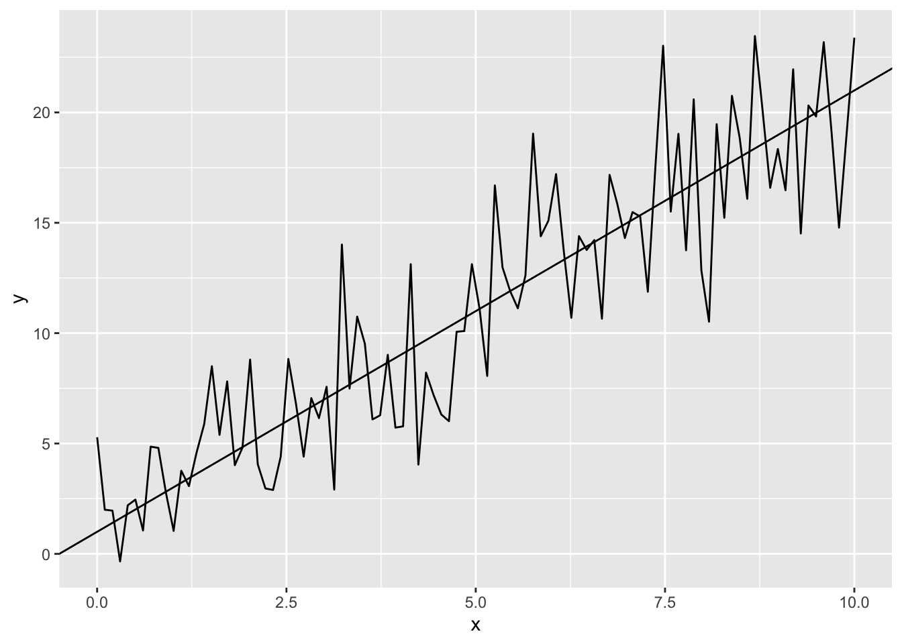

library(tidyverse)
library(gridExtra)EWF Übungen
Heteroskedastizität
Ist dies und das
n <- 100
x <- runif(n, min = 0, max = 10)
u <- rnorm(n, mean = 0, sd = .5 * x)
y <- 1 + 2*x + u
plot(x,y)
Autokorrelation der Residuen
Bli Bla Blup
n <- 100
x <- seq(from = 0, to = 10, length.out = n)
u <- numeric(n)
u[1] <- 0
for(i in 2:n) {
u[i] <- 0.8*u[i-1] + rnorm(n = 1, mean = 0, sd = 1)
}
y <- 1 + 2*x + u
data.frame(x,y) %>%
ggplot(aes(x ,y))+
geom_line()+
geom_abline(intercept = 1, slope = 2)
Keine Autokorrelation (zum Vergleich)
Und noch was cooles :)
n <- 100
x <- seq(from = 0, to = 10, length.out = n)
u <- rnorm(n, mean = 0, sd = 3)
y <- 1 + 2*x + u
data.frame(x,y) %>%
ggplot(aes(x, y))+
geom_line()+
geom_abline(intercept = 1, slope = 2)
Übung 2
Installieren Sie in R das Package Ecdat und laden Sie den Datensatz Caschool. Dieser Datensatz enthält Informationen über 420 amerikanische Schulen. Es soll der Zusammenhang zwischen der durchschnittlich erreichten Punktzahl im Test (testscr) und der Anzahl der Schüler pro Lehrer (str) sowie der Anzahl der zur Verfügung stehenden Computer je Schüler (compstu) mittels Regressionsanalyse untersucht werden. a) Berechnen und interpretieren Sie mit Hilfe der Funktionen lm() und coef() den OLS-Schätzer für das Regressionsmodell \(\text{testscr}_i = \beta_1 + \beta_2 \cdot \text{str}_i + \beta_3 \cdot \text{compstu}_i\) b) Wie verändern sich die Schätzergebnisse, wenn alle Beobachtungen von testscr bzw. str mit dem Faktor 10 multipliziert werden? c) Geben Sie die Effekte der Regressoren aus a) in Standardabweichungen an. Interpretieren Sie die Ergebnisse. d) Verifizieren Sie für \(\beta_2\) das Ergebnis aus Aufgabe 2d).
a)
# Wir laden das Package und den Datensatz in `D`
library(Ecdat)Loading required package: Ecfun
Attaching package: 'Ecfun'The following object is masked from 'package:base':
sign
Attaching package: 'Ecdat'The following object is masked from 'package:datasets':
Orangedata(Caschool)
D <- Caschool
# Wir berechnen das Regressionsmodell
R4 <- lm(testscr ~ str + I(100*compstu), data=D)
coef(R4) (Intercept) str I(100 * compstu)
676.5829650 -1.5928058 0.6515992 Wir können das Modell auch teilweise visualisieren und mit den tatsächlichen Daten vergleichen.
newdata <- expand_grid(str = seq(from = 14, to = 27, by = 0.1),
compstu = seq(from = 0, to = 0.4, by = 0.01)) %>%
mutate(testscr = predict(R4, newdata = .))
p1 <- ggplot()+
geom_tile(data = newdata, aes(x = str, y = compstu, fill = testscr))+
scale_fill_viridis_c()+
theme_bw()+
theme(legend.position = "top")
p2 <- ggplot()+
geom_point(data = D, aes(x = str, y = compstu, color = testscr))+
scale_color_viridis_c()+
theme_bw()+
theme(legend.position = "top")
grid.arrange(p2, p1, nrow = 1)b)
R5 <- lm( 10*testscr ~ str + I(100*compstu), data=D)
coef(R5) (Intercept) str I(100 * compstu)
6765.829650 -15.928058 6.515992